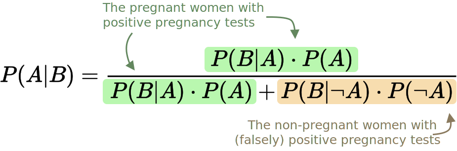

| The Self-Improving Developer | ← → |
|---|---|
| You’ve taught yourself variables, classes, functions, objects. What next? | |
Bayes’ Theorem
You have a database of notes and you want to build a system that intelligently assignes tags to the notes. For example, you write a note like this:
I found out today that we're going to have a baby! I am really excited.
And the system autosuggests adding #life and #baby.
One easy way to do this is through the so-called Bayes’ theorem. By the end of this article, you’ll know what that is and how to use it.
But before we get there, let’s first make sure you’re really expecting that baby! (I promise this is going to be relevant.)
15 . 1 Probability of babies
Pregnancy tests aren’t perfect. They can tell you you’re expecting when you’re not, and they can tell you you’re not expecting when you are. In other words, they can be wrong in two ways: there can be false positives (test says yes, but it’s incorrect) and there can be false negatives (test says no, but it’s incorrect).
| Test says YES | Test says NO | ||
|---|---|---|---|
| Actual baby | 👶 | True positive | False negative |
| No baby | ◯ | False positive | True negative |
Although they’re not perfect, pregancy tests still do have value, of course. They are mostly correct. Let’s say they correctly identify a pregnancy 93% of the time, and correctly identify non-pregnancy 95% of the time.
| Test says YES | Test says NO | ||
|---|---|---|---|
| Actual baby | 👶 | 93% | 7% |
| No baby | ◯ | 5% | 95% |
So, if you (or your partner) come out of the bathroom with a test result that says YES, what is the probability that you’re really having a baby?
You may be tempted to blurt out 93%. But not so fast.
15 . 2 Prevalence of babies
Forget the quality of the test for a moment. What is the probability that, when you’re taking a pregnancy test, you’re actually pregnant? Note that we’re not talking about the precision of any device here. We’re talking about how likely it is you’re pregnant, in reality, as you’re entering the bathroom with the little testing device in your hand.
Now, look, I can’t find any good data on this, so I’ll just go ahead and estimate. My guess is that only 10% of the women who decide to take a pregnancy test are pregnant at the time.
To find the probabilities of the four different outcomes (true positive, true negative, false positive, false negative) among all the women who take a pregnancy test, we just need to multiply:
| Test says YES | Test says NO | ||
|---|---|---|---|
| Actual baby (10%) | 👶 | 93% ⨯ 10% = 9.3% | 7% ⨯ 10% = 0.7% |
| No baby (90%) | ◯ | 5% ⨯ 90% = 4.5% | 95% ⨯ 90% = 85.5% |
It might not be immediately obvious, but the four numbers in bold add up to 100%. That makes sense: if you’re taking a pregnancy test, you will obviously fall into one of these four categories.
Note the difference:
- There is a 93% probability that—given that you are having a baby—the test says YES. This is about the quality of the test.
- There is a 9.3% probability that a random test-taking woman has a baby and her test says YES. This is about one of the four different outcomes of pregnancy test-taking.
The first probability is higher because it talks about women who we know to be pregnant. The second probability is lower because it talks about any test-taking woman.
15 . 3 Total probability
So, once again, if you come out of the bathroom with a test result that says YES, what is the probability that you’re really having a baby?
I’ll repeat the table from above here, except now it doesn’t show percentages, and instead shows whole numbers. All I did was multiply the percentages by 1000, so that instead of looking at fractions, you can imagine four groups of women. I think it makes things a bit more intuitive.
| Test says YES | Test says NO | ||
|---|---|---|---|
| Actual baby | 👶 | 93 | 7 |
| No baby | ◯ | 45 | 855 |
If you want, you can try to figure it out yourself now. The question, once again, is: “Given that your test result says YES, what is the probability that you’re really having a baby?”
…
Solution: We take the group of women with a YES. That is to say, the 93 women with the true positive test, and the 45 women with the false positive test. That’s 138 women.
Out of these 138 women, only 93 are actually having a baby. That is to say, 93 out of 138 really are pregnant.
93 divided by 138 is about 67%. That is to say, holding a test result that says YES, the probability you’re really pregnant is only 67%.
15 . 4 Congrats!
It’s a girl! You just gained an intuitive understanding of Bayes’ theorem. It’s a way to convert results of a test (e.g. pregnancy strip) into the real probability of an event (e.g. pregnancy).
Here’s the mathematical formula:

You can read it like this:
- The probability that event A occurs given event B
is equal to - the numerator, which is:
- the probability that event B occurs given event A
times - the probability that event A occurs
- the probability that event B occurs given event A
- divided by the denominator, which is:
- the probability that event B occurs given event A
times - the probability that event A occurs
plus - the probability that event B occurs given A didn’t occur
times - the probability that event A didn’t occur.
- the probability that event B occurs given event A
Now replace B with “pregnancy test says YES” and A with “you’re pregnant”.
15 . 5 The name
The theorem is named after Reverend Thomas Bayes, an English Presbyterian minister. His work was published in 1763, so this math is well over 250 years old.
When we hear “Bayes” these days, it’s either because of the theorem above, or because of a related idea of Bayesian probability. In this approach, probabilities aren’t just frequencies (e.g. “how many people are over 60 years old?”) but can also be strengths of beliefs (e.g. “how much do I believe we’ll finish the project in time?”).
15 . 6 Automatic tagging
Which brings us back to our original problem. We have a note-taking app with 1000 notes that are already tagged by the user. We want a system that automatically suggests tags (like #baby) for new notes based on what’s written in them (like "Bought a crib today!").
We’ll take words in the text, and we’ll use Bayes to see how probable it is that, given those words, a tag applies. For example, when there’s "crib" in the text, how probable is it that the tag #baby applies?
| Test | Real event | |
|---|---|---|
| Pregnancy test says YES | ?→ | Pregnancy |
One of the words in the text is "crib" | ?→ | Tag #baby applies |
It might not seem like it at first but this is essentially the same problem as above. We have a test, and we want to see how indicative it is of a real event.
Once again, if you’re up for it, you can try to figure it out yourself. Try to apply Bayes’ theorem to solve auto-tagging. To scope this down, don’t try to solve the whole algorithm at once. Just try to figure out a single pair of word & tag. In other words, find out what’s the probability of the tag #baby given the word "crib" in the text. You might want to write things down.
If you’re up for it, stop reading now and go figure it out.
…
Solution: We want to find the probability that a note should be tagged with #baby given that it contains the word "crib". That’s our P(A|B). Then, using the formula:
- The probability that a note is tagged with
#babygiven that it contains the word"crib"
is equal to - the numerator, which is:
- the probability that a note contains the word
"crib"given that it’s tagged with#baby
times - the probability that a note is tagged with
#baby
- the probability that a note contains the word
- divided by the denominator, which is:
- the probability that a note contains the word
"crib"given that it’s tagged with#baby
times - the probability that a note is tagged with
#baby
plus - the probability that a note contains the word
"crib"given that it’s not tagged with#baby
times - the probability that a note is not tagged with
#baby.
- the probability that a note contains the word
In a note-taking app, we know all those values on the right side of the equation.
The following code is just a transcript of the steps above into a programming language. It’s here in case you prefer reading code. No need to read through it otherwise.
// All of the user's notes. var notes = getAllNotes(); // Finding the sets we need. var notesTaggedWithBaby = notes .where( (note) => note.hasTag('#baby')) .toSet(); var notesWithCrib = notes .where( (note) => note.hasWord('crib')) .toSet(); var notesNotTaggedWithBaby = notes.difference(notesTaggedWithBaby); var notesWithCribTaggedWithBaby = notesTaggedWithBaby .intersection(notesWithCrib); var notesWithCribNotTaggedWithBaby = notesNotTaggedWithBaby .intersection(notesWithCrib); // Computing the numerator. var ratioOfNotesWithCribTaggedWithBaby = notesWithCribTaggedWithBaby.length / notesWithCrib.length; var ratioOfNotesTaggedWithBabyInGeneral = notesTaggedWithBaby.length / notes.length; var numerator = ratioOfNotesWithCribTaggedWithBaby * ratioOfNotesTaggedWithBabyInGeneral; // Computing the denominator. var ratioOfNotesWithCribNotTaggedWithBaby = notesWithCribNotTaggedWithBaby.length / notesNotTaggedWithBaby.length; var ratioOfNotesNotTaggedWithBabyInGeneral = notesNotTaggedWithBaby.length / notes.length; var denominator = ratioOfNotesWithCribTaggedWithBaby * ratioOfNotesTaggedWithBabyInGeneral + ratioOfNotesWithCribNotTaggedWithBaby * ratioOfNotesNotTaggedWithBabyInGeneral; var result = numerator / denominator; print(result);
Actually, there is one other reasons to read the code: to find the divide-by-zero bug that we’d need to deal with in a real project. I’ll leave that as an exercise to you. Where could the code break and how would you prevent that?
Putting aside trivialities such as division by zero, we’re done. Using this code, we can look at words in a new note and compute the probability that the note should be tagged with a particular tag.
$ bayes "crib" "#baby" 76.92% $ bayes "boss" "#work" 100.00% $ bayes "today" "#work" 34.78%
As more notes are added and tagged, the system learns automatically. Today, there are no #baby-tagged notes containing the word diaper but trust me: there will be a lot of them in a few short months. And the statistics will just update according to that fact.
15 . 7 Putting it all together
From here, it’s only a few steps to build an auto-suggestion system. We know the probabilities for individual words, but what we want is the probability of the whole note. After all, we’re not trying to tag words, we’re trying to tag notes in their entirety.
How do we combine the probabilities of the words into a single probability for the whole note? Now, this would be another few pages of probability formulas, so I’ll just jump to the conclusion:
In this formula, p is the probability that the whole note should be tagged with #baby. The other numbers (p1 to pN) are the probabilities of individual words in that note. So, for example, p1 could be the probability that a note with "crib" in it is tagged with #baby. This is what we computed above. Just take those numbers for each of the words in the new note, and plug them in that formula.
Now we get the probability for the whole note:
$ bayes "Crib arrived today..." "#baby" 83.33% $ bayes "Yet another round of spreadsheets." "#work" 100.00% $ bayes "Boss called again." "#baby" 0.00%
15 . 8 What next?
Our system might want to go through all existing tags, and rank them. The tags that are most probable should be suggested to the user.
I’ve left out some details, of course, but you should have no trouble filling in the blanks if you decide to implement Bayes’ theorem yourself.
The purpose of this article was to give you an intuitive understanding of something quite unintuitive. Bayes is used everywhere from spell checking to driverless cars. Maybe you’ll find a use for it in your own work.
If you can compute some ratio (the test), and that ratio is indicative of something interesting (the real event), think about Reverend Bayes.